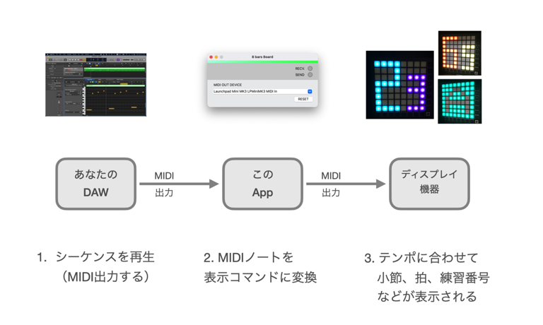
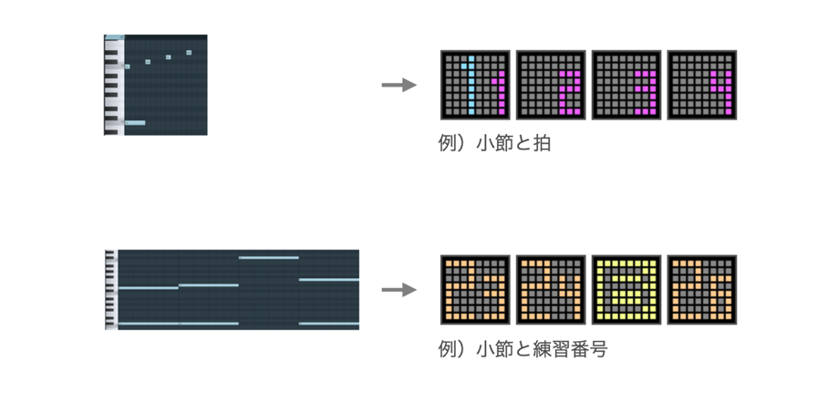

8 bars Board
8 bars Boardについて
8 bars Board（エイトバース ボード）は、「弾いてみた動画」などの演奏動画クリエイター向けの、リスナーと小節感覚を共有するためのツールです。

8 bars Boardはコンピュータ上で仮想のMIDIデバイスとして動作します。
DAWと外部ディスプレイ機器と接続することにより、DAWのMIDIシーケンスによる制御で、外部ディスプレイ機器に小節やビートを表示できます。
あなたの音楽のテンポに合わせて小節やビートを表示することにより、曲の小節構造を意識した音楽体験をリスナーと共有しましょう。

※本製品にはDAWおよびディスプレイ機器は含まれません。
動作環境
本ソフトウェアはmacOSで動作するアプリケーションです。
対応OS：
・macOS 11(Big Sur)
・macOS 12(Monterey)
入手先
動作確認済みDAW
現在のところ、以下のDAWで動作確認済みです。
・Logic Pro v10.6.0
・FL Studio 20.9
・Studio One Prime v5.5.0
・Cubase LE 11
※ DAWには、外部デバイスへのMIDI出力機能が備わっている必要があります。
（GarageBandは外部デバイスへのMIDI出力機能がないため対応していません。）
サポートするディスプレイ機器
ディスプレイ機器は、NOVATION社の Launch Pad mini MK3 のみ サポートしています。
MIDIシーケンスの入力例
MIDIシーケンスの入力例です。

音程と表示内容のマッピング
DAW上で再生する音符の音程に応じて、ディスプレイ機器に表示される内容が決まります。

色の変更
ディスプレイ機器に表示する色は、設定画面で変更することが可能です。

その他
・8 bars Boardの著作権はyamahito softwareが保有しています。
バージョン履歴
・2022/02/01 Ver1.0 初期リリース
Web: https://yamahito-software.github.io/docs/
Mail: 
Copyright 2022 yamahito software